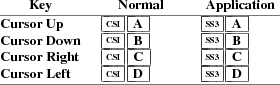
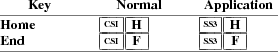
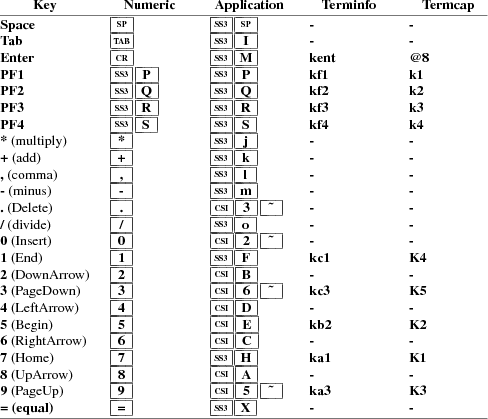
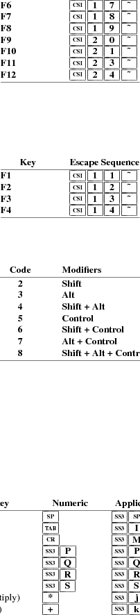
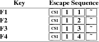
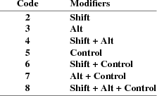
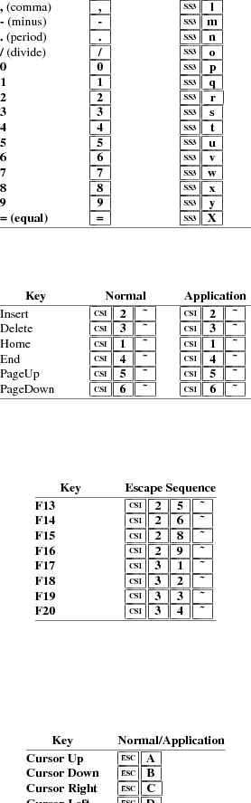
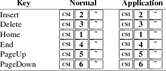
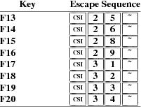
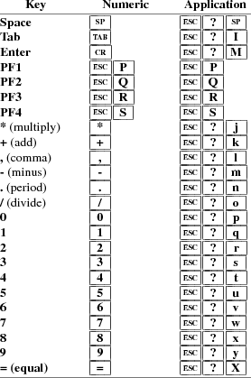

Edward Moy
University of California, Berkeley
Revised
by
Stephen Gildea
X Consortium (1994)
Thomas Dickey
XFree86 Project (1996-2005)
|
c |
The literal character c. |
|
|
C |
A single (required) character. |
|
|
P s |
A single (usually optional) numeric parameter, composed of one of more digits. |
|
|
P m |
A multiple numeric parameter composed of any number of single numeric parameters, separated by ; character(s). Individual values for the parameters are listed with P s . |
|
|
P t |
A text parameter composed of printable characters. |
The xterm program recognizes both 8-bit and 7-bit control characters. It generates 7-bit controls (by default) or 8-bit if S8C1T is enabled. The following pairs of 7-bit and 8-bit control characters are equivalent:
|
ESC D |
Index ( IND is 0x84) |
|
ESC E |
Next Line ( NEL is 0x85) |
|
ESC H |
Tab Set ( HTS is 0x88) |
|
ESC M |
Reverse Index ( RI is 0x8d) |
|
ESC N |
Single Shift Select of G2 Character Set ( SS2 is 0x8e): affects next character only |
|
ESC O |
Single Shift Select of G3 Character Set ( SS3 is 0x8f): affects next character only |
|
ESC P |
Device Control String ( DCS is 0x90) |
|
ESC V |
Start of Guarded Area ( SPA is 0x96) |
|
ESC W |
End of Guarded Area ( EPA is 0x97) |
|
ESC X |
Start of String ( SOS is 0x98) |
|
ESC Z |
Return Terminal ID (DECID is 0x9a). Obsolete form of CSI c (DA). |
|
ESC [ |
Control Sequence Introducer ( CSI is 0x9b) |
|
ESC \ |
String Terminator ( ST is 0x9c) |
|
ESC ] |
Operating System Command ( OSC is 0x9d) |
|
ESC ^ |
Privacy Message ( PM is 0x9e) |
|
ESC _ |
Application Program Command ( APC is 0x9f) |
These control characters are used in the vtXXX emulation.
Most of these control sequences are standard VT102 control sequences, but there is support for later DEC VT terminals (i.e., VT220, VT320, VT420), as well as ISO 6429 and aixterm color controls. The only VT102 features not supported is auto-repeat, since the only way X provides for this will affect all windows. There are additional control sequences to provide xterm-dependent functions, such as the scrollbar or window size. Where the function is specified by DEC or ISO 6429, the code assigned to it is given in parentheses. The escape codes to designate and invoke character sets are specified by ISO 2022; see that document for a discussion of character sets.
Single-character functions
|
BEL |
Bell (Ctrl-G) |
|
|
BS |
Backspace (Ctrl-H) |
|
|
CR |
Carriage Return (Ctrl-M) |
|
|
ENQ |
Return Terminal Status (Ctrl-E). Default response is an empty string, but may be overridden by a resource answerbackString. |
|
|
FF |
Form Feed or New Page (NP) (Ctrl-L) same as LF |
|
|
LF |
Line Feed or New Line (NL) (Ctrl-J) |
|
|
SO |
Shift Out (Ctrl-N) → Switch to Alternate Character Set: invokes the G1 character set. |
|
|
SP |
Space. |
|
|
TAB |
Horizontal Tab (HT) (Ctrl-I) |
|
|
VT |
Vertical Tab (Ctrl-K) same as LF |
|
|
SI |
Shift In (Ctrl-O) → Switch to Standard Character Set: invokes the G0 character set (the default). |
Controls beginning with ESC (other than those where ESC is part of a 7-bit equivalent to 8-bit C1 controls), ordered by the final character(s).
|
ESC SP F |
7-bit controls (S7C1T). |
|
|
ESC SP G |
8-bit controls (S8C1T). |
|
|
ESC SP L |
Set ANSI conformance level 1 (dpANS X3.134.1). |
|
|
ESC SP M |
Set ANSI conformance level 2 (dpANS X3.134.1). |
|
|
ESC SP N |
Set ANSI conformance level 3 (dpANS X3.134.1). |
|
|
ESC # 3 |
DEC double-height line, top half (DECDHL) |
|
|
ESC # 4 |
DEC double-height line, bottom half (DECDHL) |
|
|
ESC # 5 |
DEC single-width line (DECSWL) |
|
|
ESC # 6 |
DEC double-width line (DECDWL) |
|
|
ESC # 8 |
DEC Screen Alignment Test (DECALN) |
|
|
ESC % @ |
Select default character set, ISO 8859-1 (ISO 2022) |
|
|
ESC % G |
Select UTF-8 character set (ISO 2022) |
|
|
ESC ( C |
Designate G0 Character Set (ISO 2022) |
|
|
ESC ) C |
Designate G1 Character Set (ISO 2022) |
|
|
ESC * C |
Designate G2 Character Set (ISO 2022) |
|
|
ESC + C |
Designate G3 Character Set (ISO 2022) |
Final character C for
designating character sets (0 , A and B apply to VT100 and
up, the remainder to VT220 and up):
C = 0 → DEC Special Character and Line Drawing Set
C = A → United Kingdom (UK)
C = B → United States (USASCII)
C = 4 → Dutch
C = C or 5 → Finnish
C = R → French
C = Q → French Canadian
C = K → German
C = Y → Italian
C = E or 6 → Norwegian/Danish
C = Z → Spanish
C = H or 7 → Swedish
C = = → Swiss
|
ESC 7 |
Save Cursor (DECSC) |
|
|
ESC 8 |
Restore Cursor (DECRC) |
|
|
ESC = |
Application Keypad (DECPAM) |
|
|
ESC > |
Normal Keypad (DECPNM) |
|
|
ESC F |
Cursor to lower left corner of screen (if enabled by the hpLowerleftBugCompat resource). |
|
|
ESC c |
Full Reset (RIS) |
|
|
ESC l |
Memory Lock (per HP terminals). Locks memory above the cursor. |
|
|
ESC m |
Memory Unlock (per HP terminals) |
|
|
ESC n |
Invoke the G2 Character Set as GL (LS2). |
|
|
ESC o |
Invoke the G3 Character Set as GL (LS3). |
|
|
ESC | |
Invoke the G3 Character Set as GR (LS3R). |
|
|
ESC } |
Invoke the G2 Character Set as GR (LS2R). |
|
|
ESC ~ |
Invoke the G1 Character Set as GR (LS1R). |
Application Program-Control functions
|
APC P t ST |
xterm implements no APC functions; P t is ignored. P t need not be printable characters. |
Device-Control functions
|
DCS P s ; P s | P t ST |
User-Defined Keys (DECUDK). The
first parameter:
P s = 0 → Clear all UDK definitions
before starting (default)
P s = 1 → Erase Below (default)
The second parameter:
P s = 0 → Lock the keys (default)
P s = 1 → Do not lock.
The third parameter is a ’;’-separated list of
strings denoting the key-code separated by a ’/’
from the hex-encoded key value. The key codes correspond to
the DEC function-key codes (e.g., F6=17).
|
DCS $ q P t ST |
Request Status String (DECRQSS). The string following the "q" is one of the following: |
|
→ DECSCA |
||||
|
→ DECSCL |
||||
|
→ DECSTBM |
||||
|
→ SGR |
xterm responds with DCS 1 $ r P t ST for valid requests, replacing the P t with the corresponding CSI string, or DCS 0 $ r P t ST for invalid requests.
|
DCS + q P t ST |
Request Termcap/Terminfo String (xterm, experimental). The string following the "q" is a list of names encoded in hexadecimal (2 digits per character) separated by ; which correspond to termcap or terminfo key names. |
xterm responds with DCS 1 + r P t ST for valid requests, adding to P t an = , and the value of the corresponding string that xterm would send, or DCS 0 + r P t ST for invalid requests. The strings are encoded in hexadecimal (2 digits per character).
Functions using CSI , ordered by the final character(s)
|
CSI P s @ |
Insert P s (Blank) Character(s) (default = 1) (ICH) |
|
|
CSI P s A |
Cursor Up P s Times (default = 1) (CUU) |
|
|
CSI P s B |
Cursor Down P s Times (default = 1) (CUD) |
|
|
CSI P s C |
Cursor Forward P s Times (default = 1) (CUF) |
|
|
CSI P s D |
Cursor Backward P s Times (default = 1) (CUB) |
|
|
CSI P s E |
Cursor Next Line P s Times (default = 1) (CNL) |
|
|
CSI P s F |
Cursor Preceding Line P s Times (default = 1) (CPL) |
|
|
CSI P s G |
Cursor Character Absolute [column] (default = [row,1]) (CHA) |
|
|
CSI P s ; P s H |
Cursor Position [row;column] (default = [1,1]) (CUP) |
|
|
CSI P s I |
Cursor Forward Tabulation P s tab stops (default = 1) (CHT) |
|
|
CSI P s J |
Erase in Display (ED) |
P s = 0
→ Erase Below (default)
P s = 1 → Erase Above
P s = 2 → Erase All
P s = 3 → Erase Saved Lines
(xterm)
|
CSI ? P s J |
Erase in Display (DECSED) |
P s = 0
→ Selective Erase Below (default)
P s = 1 → Selective Erase Above
P s = 2 → Selective Erase All
|
CSI P s K |
Erase in Line (EL) |
P s = 0
→ Erase to Right (default)
P s = 1 → Erase to Left
P s = 2 → Erase All
|
CSI ? P s K |
Erase in Line (DECSEL) |
P s = 0
→ Selective Erase to Right (default)
P s = 1 → Selective Erase to Left
P s = 2 → Selective Erase All
|
CSI P s L |
Insert P s Line(s) (default = 1) (IL) |
|
|
CSI P s M |
Delete P s Line(s) (default = 1) (DL) |
|
|
CSI P s P |
Delete P s Character(s) (default = 1) (DCH) |
|
|
CSI P s S |
Scroll up P s lines (default = 1) (SU) |
|
|
CSI P s T |
Scroll down P s lines (default = 1) (SD) |
|
|
CSI P s ; P s ; P |
s ; P s ; P s T
|
Initiate highlight mouse tracking. Parameters are [func;startx;starty;firstrow;lastrow]. See the section Mouse Tracking. |
||
|
CSI P s X |
Erase P s Character(s) (default = 1) (ECH) |
|
|
CSI P s Z |
Cursor Backward Tabulation P s tab stops (default = 1) (CBT) |
|
|
CSI P m ` |
Character Position Absolute [column] (default = [row,1]) (HPA) |
|
|
CSI P s b |
Repeat the preceding graphic character P s times (REP) |
|
|
CSI P s c |
Send Device Attributes (Primary DA) |
P s = 0
or omitted → request attributes from terminal. The
response depends on the decTerminalID resource
setting.
→ CSI ? 1 ; 2 c
(‘‘VT100 with Advanced Video
Option’’)
→ CSI ? 1 ; 0 c
(‘‘VT101 with No Options’’)
→ CSI ? 6 c
(‘‘VT102’’)
→ CSI ? 6 0 ; 1 ; 2 ; 6 ;
8 ; 9 ; 1 5 ; c (‘‘VT220’’)
The VT100-style response parameters do not mean anything by
themselves. VT220 parameters do, telling the host what
features the terminal supports:
→ 1 132-columns
→ 2 Printer
→ 6 Selective erase
→ 8 User-defined keys
→ 9 National replacement character sets
→ 1 5 Technical characters
→ 2 2 ANSI color, e.g., VT525
→ 2 9 ANSI text locator (i.e., DEC Locator mode)
|
CSI > P s c |
Send Device Attributes (Secondary DA) |
P s = 0
or omitted → request the terminal’s
identification code. The response depends on the
decTerminalID resource setting. It should apply only
to VT220 and up, but xterm extends this to VT100.
→ CSI > P
p ; P v ; P
c c
where P p denotes the terminal type
→ 0 (‘‘VT100’’)
→ 1 (‘‘VT220’’)
and P v is the firmware version (for
xterm, this is the XFree86 patch number, starting
with 95). In a DEC terminal, P c
indicates the ROM cartridge registration number and is
always zero.
|
CSI P m d |
Line Position Absolute [row] (default = [1,column]) (VPA) |
|
|
CSI P s ; P s f |
Horizontal and Vertical Position [row;column] (default = [1,1]) (HVP) |
|
|
CSI P s g |
Tab Clear (TBC) |
P s = 0
→ Clear Current Column (default)
P s = 3 → Clear All
|
CSI P m h |
Set Mode (SM) |
P s = 2
→ Keyboard Action Mode (AM)
P s = 4 → Insert Mode (IRM)
P s = 1 2 → Send/receive (SRM)
P s = 2 0 → Automatic Newline
(LNM)
|
CSI ? P m h |
DEC Private Mode Set (DECSET) |
P s = 1
→ Application Cursor Keys (DECCKM)
P s = 2 → Designate USASCII for
character sets G0-G3 (DECANM), and set VT100 mode.
P s = 3 → 132 Column Mode (DECCOLM)
P s = 4 → Smooth (Slow) Scroll
(DECSCLM)
P s = 5 → Reverse Video (DECSCNM)
P s = 6 → Origin Mode (DECOM)
P s = 7 → Wraparound Mode (DECAWM)
P s = 8 → Auto-repeat Keys (DECARM)
P s = 9 → Send Mouse X & Y on
button press. See the section Mouse Tracking.
P s = 1 0 → Show toolbar (rxvt)
P s = 1 2 → Start Blinking Cursor
(att610)
P s = 1 8 → Print form feed (DECPFF)
P s = 1 9 → Set print extent to full
screen (DECPEX)
P s = 2 5 → Show Cursor (DECTCEM)
P s = 3 0 → Show scrollbar (rxvt).
P s = 3 5 → Enable font-shifting
functions (rxvt).
P s = 3 8 → Enter Tektronix Mode
(DECTEK)
P s = 4 0 → Allow 80 → 132 Mode
P s = 4 1 → more(1) fix (see
curses resource)
P s = 4 2 → Enable Nation
Replacement Character sets (DECNRCM)
P s = 4 4 → Turn On Margin Bell
P s = 4 5 → Reverse-wraparound Mode
P s = 4 6 → Start Logging (normally
disabled by a compile-time option)
P s = 4 7 → Use Alternate Screen
Buffer (unless disabled by the titeInhibit resource)
P s = 6 6 → Application keypad
(DECNKM)
P s = 6 7 → Backarrow key sends
backspace (DECBKM)
P s = 1 0 0 0 → Send Mouse X & Y
on button press and release. See the section Mouse
Tracking.
P s = 1 0 0 1 → Use Hilite Mouse
Tracking.
P s = 1 0 0 2 → Use Cell Motion
Mouse Tracking.
P s = 1 0 0 3 → Use All Motion Mouse
Tracking.
P s = 1 0 1 0 → Scroll to bottom on
tty output (rxvt).
P s = 1 0 1 1 → Scroll to bottom on
key press (rxvt).
P s = 1 0 3 5 → Enable special
modifiers for Alt and NumLock keys.
P s = 1 0 3 6 → Send ESC when Meta
modifies a key (enables the metaSendsEscape
resource).
P s = 1 0 3 7 → Send DEL from the
editing-keypad Delete key
P s = 1 0 4 7 → Use Alternate Screen
Buffer (unless disabled by the titeInhibit resource)
P s = 1 0 4 8 → Save cursor as in
DECSC (unless disabled by the titeInhibit resource)
P s = 1 0 4 9 → Save cursor as in
DECSC and use Alternate Screen Buffer, clearing it first
(unless disabled by the titeInhibit resource). This
combines the effects of the 1 0 4 7 and 1 0 4 8 modes. Use
this with terminfo-based applications rather than the 4 7
mode.
P s = 1 0 5 1 → Set Sun function-key
mode.
P s = 1 0 5 2 → Set HP function-key
mode.
P s = 1 0 5 3 → Set SCO function-key
mode.
P s = 1 0 6 0 → Set legacy keyboard
emulation (X11R6).
P s = 1 0 6 1 → Set Sun/PC keyboard
emulation of VT220 keyboard.
P s = 2 0 0 4 → Set bracketed paste
mode.
|
CSI P m i |
Media Copy (MC) |
P s = 0
→ Print screen (default)
P s = 4 → Turn off printer
controller mode
P s = 5 → Turn on printer controller
mode
|
CSI ? P m i |
Media Copy (MC, DEC-specific) |
P s = 1
→ Print line containing cursor
P s = 4 → Turn off autoprint mode
P s = 5 → Turn on autoprint mode
P s = 1 0 → Print composed display,
ignores DECPEX
P s = 1 1 → Print all pages
|
CSI P m l |
Reset Mode (RM) |
P s = 2
→ Keyboard Action Mode (AM)
P s = 4 → Replace Mode (IRM)
P s = 1 2 → Send/receive (SRM)
P s = 2 0 → Normal Linefeed
(LNM)
|
CSI ? P m l |
DEC Private Mode Reset (DECRST) |
P s = 1
→ Normal Cursor Keys (DECCKM)
P s = 2 → Designate VT52 mode
(DECANM).
P s = 3 → 80 Column Mode (DECCOLM)
P s = 4 → Jump (Fast) Scroll
(DECSCLM)
P s = 5 → Normal Video (DECSCNM)
P s = 6 → Normal Cursor Mode (DECOM)
P s = 7 → No Wraparound Mode
(DECAWM)
P s = 8 → No Auto-repeat Keys
(DECARM)
P s = 9 → Don’t Send Mouse X
& Y on button press
P s = 1 0 → Hide toolbar (rxvt)
P s = 1 2 → Stop Blinking Cursor
(att610)
P s = 1 8 → Don’t print form
feed (DECPFF)
P s = 1 9 → Limit print to scrolling
region (DECPEX)
P s = 2 5 → Hide Cursor (DECTCEM)
P s = 3 0 → Don’t show
scrollbar (rxvt).
P s = 3 5 → Disable font-shifting
functions (rxvt).
P s = 4 0 → Disallow 80 → 132
Mode
P s = 4 1 → No more(1) fix
(see curses resource)
P s = 4 2 → Disable Nation
Replacement Character sets (DECNRCM)
P s = 4 4 → Turn Off Margin Bell
P s = 4 5 → No Reverse-wraparound
Mode
P s = 4 6 → Stop Logging (normally
disabled by a compile-time option)
P s = 4 7 → Use Normal Screen Buffer
P s = 6 6 → Numeric keypad (DECNKM)
P s = 6 7 → Backarrow key sends
delete (DECBKM)
P s = 1 0 0 0 → Don’t Send
Mouse X & Y on button press and release. See the section
Mouse Tracking.
P s = 1 0 0 1 → Don’t Use
Hilite Mouse Tracking
P s = 1 0 0 2 → Don’t Use Cell
Motion Mouse Tracking
P s = 1 0 0 3 → Don’t Use All
Motion Mouse Tracking
P s = 1 0 1 0 → Don’t scroll
to bottom on tty output (rxvt).
P s = 1 0 1 1 → Don’t scroll
to bottom on key press (rxvt).
P s = 1 0 3 5 → Disable special
modifiers for Alt and NumLock keys.
P s = 1 0 3 6 → Don’t send ESC
when Meta modifies a key (disables the
metaSendsEscape resource).
P s = 1 0 3 7 → Send VT220 Remove
from the editing-keypad Delete key
P s = 1 0 4 7 → Use Normal Screen
Buffer, clearing screen first if in the Alternate Screen
(unless disabled by the titeInhibit resource)
P s = 1 0 4 8 → Restore cursor as in
DECRC (unless disabled by the titeInhibit resource)
P s = 1 0 4 9 → Use Normal Screen
Buffer and restore cursor as in DECRC (unless disabled by
the titeInhibit resource). This combines the effects
of the 1 0 4 7 and 1 0 4 8 modes. Use this with
terminfo-based applications rather than the 4 7 mode.
P s = 1 0 5 1 → Reset Sun
function-key mode.
P s = 1 0 5 2 → Reset HP
function-key mode.
P s = 1 0 5 3 → Reset SCO
function-key mode.
P s = 1 0 6 0 → Reset legacy
keyboard emulation (X11R6).
P s = 1 0 6 1 → Reset Sun/PC
keyboard emulation of VT220 keyboard.
P s = 2 0 0 4 → Reset bracketed
paste mode.
|
CSI P m m |
Character Attributes (SGR) |
P s = 0
→ Normal (default)
P s = 1 → Bold
P s = 4 → Underlined
P s = 5 → Blink (appears as Bold)
P s = 7 → Inverse
P s = 8 → Invisible, i.e., hidden
(VT300)
P s = 2 2 → Normal (neither bold nor
faint)
P s = 2 4 → Not underlined
P s = 2 5 → Steady (not blinking)
P s = 2 7 → Positive (not inverse)
P s = 2 8 → Visible, i.e., not
hidden (VT300)
P s = 3 0 → Set foreground color to
Black
P s = 3 1 → Set foreground color to
Red
P s = 3 2 → Set foreground color to
Green
P s = 3 3 → Set foreground color to
Yellow
P s = 3 4 → Set foreground color to
Blue
P s = 3 5 → Set foreground color to
Magenta
P s = 3 6 → Set foreground color to
Cyan
P s = 3 7 → Set foreground color to
White
P s = 3 9 → Set foreground color to
default (original)
P s = 4 0 → Set background color to
Black
P s = 4 1 → Set background color to
Red
P s = 4 2 → Set background color to
Green
P s = 4 3 → Set background color to
Yellow
P s = 4 4 → Set background color to
Blue
P s = 4 5 → Set background color to
Magenta
P s = 4 6 → Set background color to
Cyan
P s = 4 7 → Set background color to
White
P s = 4 9 → Set background color to
default (original).
If 16-color
support is compiled, the following apply. Assume that
xterm’s resources are set so that the ISO color
codes are the first 8 of a set of 16. Then the
aixterm colors are the bright versions of the ISO
colors:
P s = 9 0 → Set foreground color to
Black
P s = 9 1 → Set foreground color to
Red
P s = 9 2 → Set foreground color to
Green
P s = 9 3 → Set foreground color to
Yellow
P s = 9 4 → Set foreground color to
Blue
P s = 9 5 → Set foreground color to
Magenta
P s = 9 6 → Set foreground color to
Cyan
P s = 9 7 → Set foreground color to
White
P s = 1 0 0 → Set background color
to Black
P s = 1 0 1 → Set background color
to Red
P s = 1 0 2 → Set background color
to Green
P s = 1 0 3 → Set background color
to Yellow
P s = 1 0 4 → Set background color
to Blue
P s = 1 0 5 → Set background color
to Magenta
P s = 1 0 6 → Set background color
to Cyan
P s = 1 0 7 → Set background color
to White
If xterm
is compiled with the 16-color support disabled, it supports
the following, from rxvt:
P s = 1 0 0 → Set foreground and
background color to default
If 88- or
256-color support is compiled, the following apply.
P s = 3 8 ; 5 ; P s
→ Set foreground color to the second P
s
P s = 4 8 ; 5 ; P s
→ Set background color to the second P
s
|
CSI P s n |
Device Status Report (DSR) |
P s = 5
→ Status Report CSI 0 n
(‘‘OK’’)
P s = 6 → Report Cursor Position
(CPR) [row;column] as
CSI r ; c R
|
CSI ? P s n |
Device Status Report (DSR, DEC-specific) |
P s = 6
→ Report Cursor Position (CPR) [row;column] as
CSI ? r ; c R
(assumes page is zero).
P s = 1 5 → Report Printer status as
CSI ? 1 0 n (ready) or
CSI ? 1 1 n (not ready)
P s = 2 5 → Report UDK status as
CSI ? 2 0 n (unlocked) or
CSI ? 2 1 n (locked)
P s = 2 6 → Report Keyboard status
as
CSI ? 2 7 ; 1 ; 0 ; 0 n (North American)
The last two parameters apply to VT400 & up, and denote
keyboard ready and LK01 respectively.
P s = 5 3 → Report Locator status as
CSI ? 5 3 n Locator available, if
compiled-in, or
CSI ? 5 0 n No Locator, if not.
|
CSI ! p |
Soft terminal reset (DECSTR) |
|
CSI P s ; P s “ p |
Set conformance level (DECSCL) Valid values for the first parameter: |
P s = 6 1
→ VT100
P s = 6 2 → VT200
P s = 6 3 → VT300
Valid values for the second parameter:
P s = 0 → 8-bit controls
P s = 1 → 7-bit controls (always set
for VT100)
P s = 2 → 8-bit controls
|
CSI P s “ q |
Select character protection attribute (DECSCA). Valid values for the parameter: |
P s = 0
→ DECSED and DECSEL can erase (default)
P s = 1 → DECSED and DECSEL cannot
erase
P s = 2 → DECSED and DECSEL can
erase
|
CSI P s ; P s r |
Set Scrolling Region [top;bottom] (default = full size of window) (DECSTBM) |
|
CSI ? P m r |
Restore DEC Private Mode Values. The value of P s previously saved is restored. P s values are the same as for DECSET. |
|
CSI P t ; P l ; P b ; |
P r ; P s $ r
|
Change Attributes in Rectangular Area (DECCARA). |
P t ;
P l ; P b ; P
r denotes the rectangle.
P s denotes the SGR attributes to change:
0, 1, 4, 5, 7
|
CSI s |
Save cursor (ANSI.SYS) |
|
CSI ? P m s |
Save DEC Private Mode Values. P s values are the same as for DECSET. |
|
CSI P s ; P s ; P |
s t
|
Window manipulation (from dtterm, as well as extensions). These controls may be disabled using the allowWindowOps resource. Valid values for the first (and any additional parameters) are: |
P s = 1
→ De-iconify window.
P s = 2 → Iconify window.
P s = 3 ; x ; y → Move window
to [x, y].
P s = 4 ; height ; width →
Resize the xterm window to height and width in
pixels.
P s = 5 → Raise the xterm
window to the front of the stacking order.
P s = 6 → Lower the xterm
window to the bottom of the stacking order.
P s = 7 → Refresh the xterm
window.
P s = 8 ; height ; width →
Resize the text area to [height;width] in characters.
P s = 9 ; 0 → Restore maximized
window.
P s = 9 ; 1 → Maximize window (i.e.,
resize to screen size).
P s = 1 1 → Report xterm
window state. If the xterm window is open
(non-iconified), it returns
CSI 1 t . If the xterm
window is iconified, it returns
CSI 2 t .
P s = 1 3 → Report xterm
window position as CSI 3 ;
x; yt
P s = 1 4 → Report xterm
window in pixels as CSI 4 ;
height ; width t
P s = 1 8 → Report the size of the
text area in characters as CSI
8 ; height ; width t
P s = 1 9 → Report the size of the
screen in characters as CSI 9
; height ; width t
P s = 2 0 → Report xterm
window’s icon label as
OSC L label
ST
P s = 2 1 → Report xterm
window’s title as OSC l
title ST
P s >= 2 4 → Resize to P
s lines (DECSLPP)
|
CSI P t ; P l ; P b ; P r ; P s $ t |
Reverse Attributes in
Rectangular Area (DECRARA).
P t ; P l ; P
b ; P r denotes the
rectangle.
P s denotes the attributes to reverse. 1,
4, 5, 7
|
CSI u |
Save cursor (ANSI.SYS) |
|
|
CSI P t ; P l ; P b ; |
P r ; P p ; P t ; P l ; P p $ v
|
Copy Rectangular Area (DECCRA) |
P t ;
P l ; P b ; P
r denotes the rectangle.
P p denotes the source page.
P t ; P l denotes
the target location.
P p denotes the target page.
|
CSI P t ; P l ; P b ; P r ’ w |
Enable Filter Rectangle
(DECEFR)
Parameters are [top;left;bottom;right].
Defines the coordinates of a filter rectangle and activates
it. Anytime the locator is detected outside of the filter
rectangle, an outside rectangle event is generated and the
rectangle is disabled. Filter rectangles are always treated
as "one-shot" events. Any parameters that are
omitted default to the current locator position. If all
parameters are omitted, any locator motion will be reported.
DECELR always cancels any prevous rectangle definition.
|
CSI P s x |
Request Terminal Parameters (DECREQTPARM) |
if P s is
a "0" (default) or "1", and xterm
is emulating VT100, the control sequence elicits a response
of the same form whose parameters describe the terminal:
P s → the given P
s incremented by 2.
1 → no parity
1 → eight bits
1 2 8 → transmit 38.4k baud
1 2 8 → receive 38.4k baud
1 → clock multiplier
0 → STP flags
|
CSI P s x |
Select Attribute Change Extent (DECSACE). |
P s = 0
→ from start to end position, wrapped
P s = 1 → from start to end
position, wrapped
P s = 2 → rectangle (exact).
|
CSI P c ; P t ; P l ; P b ; P r $ x |
Fill Rectangular Area (DECFRA).
P c is the character to use.
P t ; P l ; P
b ; P r denotes the
rectangle.
|
CSI P s ; P u ’ z |
Enable Locator Reporting (DECELR) |
Valid values for the first
parameter:
P s = 0 → Locator disabled (default)
P s = 1 → Locator enabled
P s = 2 → Locator enabled for one
report, then disabled
The second parameter specifies the coordinate unit for
locator reports.
Valid values for the second parameter:
P u = 0 or omitted → default to
character cells
P u = 1 → device physical pixels
P u = 2 → character cells
|
CSI P t ; P l ; P b ; P r $ z |
Erase Rectangular Area
(DECERA).
P t ; P l ; P
b ; P r denotes the
rectangle.
|
CSI P m ’ { |
Select Locator Events (DECSLE) |
Valid values for the first (and
any additional parameters) are:
P s = 0 → only respond to explicit
host requests (DECRQLP)
(default) also cancels any filter rectangle
P s = 1 → report button down
transitions
P s = 2 → do not report button down
transitions
P s = 3 → report button up
transitions
P s = 4 → do not report button up
transitions
|
CSI P t ; P l ; P b ; P r $ { |
Selective Erase Rectangular
Area (DECSERA).
P t ; P l ; P
b ; P r denotes the
rectangle.
|
CSI P s ’ | |
Request Locator Position (DECRQLP) |
Valid values for the parameter
are:
P s = 0 , 1 or omitted → transmit a
single DECLRP locator report
If Locator Reporting has been enabled by a DECELR, xterm will respond with a DECLRP Locator Report. This report is also generated on button up and down events if they have been enabled with a DECSLE, or when the locator is detected outside of a filter rectangle, if filter rectangles have been enabled with a DECEFR.
→ CSI P e ; P b ; P r ; P c ; P p & w
Parameters are
[event;button;row;column;page].
Valid values for the event:
P e = 0 → locator unavailable - no
other parameters sent
P e = 1 → request - xterm received a
DECRQLP
P e = 2 → left button down
P e = 3 → left button up
P e = 4 → middle button down
P e = 5 → middle button up
P e = 6 → right button down
P e = 7 → right button up
P e = 8 → M4 button down
P e = 9 → M4 button up
P e = 1 0 → locator outside filter
rectangle
‘‘button’’ parameter is a bitmask
indicating which buttons are pressed:
P b = 0 → no buttons down
P b & 1 → right button down
P b & 2 → middle button down
P b & 4 → left button down
P b & 8 → M4 button down
‘‘row’’ and
‘‘column’’ parameters are the
coordinates of the locator position in the xterm window,
encoded as ASCII decimal.
The ‘‘page’’ parameter is not used
by xterm, and will be omitted.
Operating System Controls
|
OSC P s ; P t ST |
|
|
OSC P s ; P t BEL |
Set Text Parameters. For colors and font, if P t is a "?", the control sequence elicits a response which consists of the control sequence which would set the corresponding value. The dtterm control sequences allow you to determine the icon name and window title. |
P s = 0
→ Change Icon Name and Window Title to P
t
P s = 1 → Change Icon Name to P
t
P s = 2 → Change Window Title to
P t
P s = 3 → Set X property on
top-level window. P t should be in the
form "prop=value", or just
"prop" to delete the property
P s = 4 ; c ; spec → Change
Color Number c to the color specified by spec,
i.e., a name or RGB specification as per XParseColor.
Any number of c name pairs may be given. The color
numbers correspond to the ANSI colors 0-7, their bright
versions 8-15, and if supported, the remainder of the
88-color or 256-color table.
If a "?" is given rather than a name or RGB specification, xterm replies with a control sequence of the same form which can be used to set the corresponding color. Because more than one pair of color number and specification can be given in one control sequence, xterm can make more than one reply.
The 8 colors which may be set using 1 0 through 1 7 are denoted dynamic colors, since the corresponding control sequences were the first means for setting xterm’s colors dynamically, i.e., after it was started. They are not the same as the ANSI colors. One or more parameters is expected for P t . Each successive parameter changes the next color in the list. The value of P s tells the starting point in the list. The colors are specified by name or RGB specification as per XParseColor.
If a "?" is given rather than a name or RGB specification, xterm replies with a control sequence of the same form which can be used to set the corresponding dynamic color. Because more than one pair of color number and specification can be given in one control sequence, xterm can make more than one reply.
P
s = 1 0 → Change VT100 text
foreground color to P t
P s = 1 1 → Change VT100 text
background color to P t
P s = 1 2 → Change text cursor color
to P t
P s = 1 3 → Change mouse foreground
color to P t
P s = 1 4 → Change mouse background
color to P t
P s = 1 5 → Change Tektronix
foreground color to P t
P s = 1 6 → Change Tektronix
background color to P t
P s = 1 7 → Change highlight color
to P t
P s = 1 8 → Change Tektronix cursor
color to P t
P s = 4 6 → Change Log File to P t (normally disabled by a compile-time option)
P s = 5 0 → Set Font to P t If P t begins with a "#", index in the font menu, relative (if the next character is a plus or minus sign) or absolute. A number is expected but not required after the sign (the default is the current entry for relative, zero for absolute indexing).
P s = 5 1 (reserved for Emacs shell)
P s = 5 2 → Manipulate Selection Data. These controls may be disabled using the allowWindowOps resource. The parameter P t is parsed as
|
P c ; P d |
The first, P
c , may contain any character from the
set c p s 0 1 2 3 4 5 6 7 . It is used to construct a list
of selection parameters for clipboard, primary, select, or
cut buffers 0 through 8 respectively, in the order given. If
the parameter is empty, xterm uses s 0 , to specify
the configurable primary/clipboard selection and cut buffer
0.
The second parameter, P d , gives the
selection data. Normally this is a string encoded in base64.
The data becomes the new selection, which is then available
for pasting by other applications.
If the second parameter is a ? , xterm replies to the
host with the selection data encoded using the same
protocol.
Privacy Message
|
PM P t ST |
xterm implements no PM functions; P t is ignored. P t need not be printable characters. |
If xterm
does minimal translation of the function keys, it usually
does this with a PC-style keyboard, so PC-style function
keys result. Sun keyboards are similar to PC keyboards. Both
have cursor and scrolling operations printed on the keypad,
which duplicate the smaller cursor and scrolling keypads.
X does not predefine NumLock (used for VT220 keyboards) or
Alt (used as an extension for the Sun/PC keyboards) as
modifiers. These keys are recognized as modifiers when
enabled by the numLock resource, or by the DECSET 1 0
3 5 control sequence.
The cursor keys transmit the following escape sequences
depending on the mode specified via the DECCKM escape
sequence.

The home- and end-keys (unlike PageUp and other keys also on the 6-key editing keypad) are considered "cursor keys" by xterm. Their mode is also controlled by the DECCKM escape sequence:

The application keypad transmits the
following escape sequences depending on the mode specified
via the DECPNM and DECPAM escape sequences.
Use the NumLock key to override the application mode.
Not all keys are present on the Sun/PC keypad (e.g., PF1,
Tab), but are supported by the program.

They also provide 12 function keys, as well as a few other special-purpose keys.

Older versions of xterm implement different escape sequences for F1 through F4. These can be activated by setting the oldXtermFKeys resource. However, since they do not correspond to any hardware terminal, they have been deprecated. (The DEC VT220 reserves F1 through F5 for local functions such as Setup).

In normal mode, i.e., a Sun/PC keyboard when the sunKeyboard resource is false, xterm recognizes function key modifiers which are parameters appended before the final character of the control sequence.

For example, shift-F5 would be sent as CSI 1 5 ; 2 ~
If the alwaysUseMods resource is set, the Meta modifier also is recognized, making parameters 9 through 16.
However,
xterm is most useful as a DEC VT102 or VT220
emulator. Set the sunKeyboard resource to true to
force a Sun/PC keyboard to act like a VT220 keyboard.
The VT102/VT220 application keypad transmits unique escape
sequences in application mode, which are distinct from the
cursor and scrolling keypad:

The VT220 provides a 6-key editing keypad, which is analogous to that on the PC keyboard. It is not affected by DECCKM or DECPNM/DECPAM:

The VT220 provides 8 additional function keys. With a Sun/PC keyboard, access these keys by Control/F1 for F13, etc.

A VT52 does not have function keys, but it does have a numeric keypad and cursor keys. They differ from the other emulations by the prefix. Also, the cursor keys do not change:
The keypad is similar:

The xterm
program provides support for Sun keyboards more directly, by
a menu toggle that causes it to send Sun-style function key
codes rather than VT220. Note, however, that the sun
and VT100 emulations are not really compatible. For
example, their wrap-margin behavior differs.
Only function keys are altered; keypad and cursor keys are
the same. The emulation responds identically. See the
xterm-sun terminfo entry for details.
Similarly, xterm can be compiled to support HP keyboards. See the xterm-hp terminfo entry for details.
Xterm
maintains two screen buffers. The normal screen buffer
allows you to scroll back to view saved lines of output up
to the maximum set by the saveLines resource. The
alternate screen buffer is exactly as large as the display,
contains no additional saved lines. When the alternate
screen buffer is active, you cannot scroll back to view
saved lines. Xterm provides control sequences and
menu entries for switching between the two.
Most full-screen applications use terminfo or termcap to
obtain strings used to start/stop full-screen mode, i.e.,
smcup and rmcup for terminfo, or the
corresponding ti and te for termcap. The
titeInhibit resource removes the ti and
te strings from the TERMCAP string which is set in
the environment for some platforms. That is not done when
xterm is built with terminfo libraries because
terminfo does not provide the whole text of the termcap data
in one piece. It would not work for terminfo anyway, since
terminfo data is not passed in environment variables;
setting an environment variable in this manner would have no
effect on the application’s ability to switch between
normal and alternate screen buffers. Instead, the newer
private mode controls (such as 1 0 4 9 ) for switching
between normal and alternate screen buffers simply disable
the switching. They add other features such as clearing the
display for the same reason: to make the details of
switching independent of the application that requests the
switch.
When bracketed paste mode is set, pasted text is bracketed with control sequences so that the program can differentiate pasted text from typed-in text. When bracketed paste mode is set, the program will receive: ESC [ 200 ~, followed by the pasted text, followed by ESC [ 201 ~.
The VT widget can be set to send the mouse position and other information on button presses. These modes are typically used by editors and other full-screen applications that want to make use of the mouse.
There are six mutually exclusive modes. One is DEC Locator mode, enabled by the DECELR CSI P s ; P s ´z control sequence, and is not described here (control sequences are summarized above). The remaining five modes are each enabled (or disabled) by a different parameter in DECSET CSI ? P m h or DECRST CSI ? P m l control sequence.
Manifest constants for the parameter values are defined in xcharmouse.h as follows:
#define
SET_X10_MOUSE 9
#define SET_VT200_MOUSE 1000
#define SET_VT200_HIGHLIGHT_MOUSE 1001
#define SET_BTN_EVENT_MOUSE 1002
#define SET_ANY_EVENT_MOUSE 1003
The motion reporting modes are strictly xterm extensions, and are not part of any standard, though they are analogous to the DEC VT200 DECELR locator reports.
Parameters (such as pointer position and button number) for all mouse tracking escape sequences generated by xterm encode numeric parameters in a single character as value+32. For example, ! specifies the value 1. The upper left character position on the terminal is denoted as 1,1.
X10 compatibility mode sends an escape sequence only on button press, encoding the location and the mouse button pressed. It is enabled by specifying parameter 9 to DECSET. On button press, xterm sends CSI M C b C x C y (6 characters). C b is button−1. C x and C y are the x and y coordinates of the mouse when the button was pressed.
Normal tracking mode sends an escape sequence on both button press and release. Modifier key (shift, ctrl, meta) information is also sent. It is enabled by specifying parameter 1000 to DECSET. On button press or release, xterm sends CSI M C b C x C y . The low two bits of C b encode button information: 0=MB1 pressed, 1=MB2 pressed, 2=MB3 pressed, 3=release. The next three bits encode the modifiers which were down when the button was pressed and are added together: 4=Shift, 8=Meta, 16=Control. Note however that the shift and control bits are normally unavailable because xterm uses the control modifier with mouse for popup menus, and the shift modifier is used in the default translations for button events. The Meta modifier recognized by xterm is the mod1 mask, and is not necessarily the "Meta" key (see xmodmap). C x and C y are the x and y coordinates of the mouse event, encoded as in X10 mode.
Wheel mice may return buttons 4 and 5. Those buttons are represented by the same event codes as buttons 1 and 2 respectively, except that 64 is added to the event code. Release events for the wheel buttons are not reported.
Mouse highlight tracking notifies a program of a button press, receives a range of lines from the program, highlights the region covered by the mouse within that range until button release, and then sends the program the release coordinates. It is enabled by specifying parameter 1001 to DECSET. Highlighting is performed only for button 1, though other button events can be received. Warning: use of this mode requires a cooperating program or it will hang xterm. On button press, the same information as for normal tracking is generated; xterm then waits for the program to send mouse tracking information. All X events are ignored until the proper escape sequence is received from the pty: CSI P s ; P s ; P s ; P s ; P s T . The parameters are func, startx, starty, firstrow, and lastrow. func is non-zero to initiate highlight tracking and zero to abort. startx and starty give the starting x and y location for the highlighted region. The ending location tracks the mouse, but will never be above row firstrow and will always be above row lastrow. (The top of the screen is row 1.) When the button is released, xterm reports the ending position one of two ways: if the start and end coordinates are valid text locations: CSI t C x C y . If either coordinate is past the end of the line: CSI T C x C y C x C y C x C y . The parameters are startx, starty, endx, endy, mousex, and mousey. startx, starty, endx, and endy give the starting and ending character positions of the region. mousex and mousey give the location of the mouse at button up, which may not be over a character.
Button-event tracking is essentially the same as normal tracking, but xterm also reports button-motion events. Motion events are reported only if the mouse pointer has moved to a different character cell. It is enabled by specifying parameter 1002 to DECSET. On button press or release, xterm sends the same codes used by normal tracking mode. On button-motion events, xterm adds 32 to the event code (the third character, C b ). The other bits of the event code specify button and modifier keys as in normal mode. For example, motion into cell x,y with button 1 down is reported as CSI M @ C x C y . ( @ = 32 + 0 (button 1) + 32 (motion indicator) ). Similarly, motion with button 3 down is reported as CSI M B C x C y . ( B = 32 + 2 (button 3) + 32 (motion indicator) ).
Any-event mode is the same as button-event mode, except that all motion events are reported, even if no mouse button is down. It is enabled by specifying 1003 to DECSET.
Most of these sequences are standard Tektronix 4014 control sequences. Graph mode supports the 12-bit addressing of the Tektronix 4014. The major features missing are the write-through and defocused modes. This document does not describe the commands used in the various Tektronix plotting modes but does describe the commands to switch modes.
|
BEL |
Bell (Ctrl-G) |
|
BS |
Backspace (Ctrl-H) |
|
TAB |
Horizontal Tab (Ctrl-I) |
|
LF |
Line Feed or New Line (Ctrl-J) |
|
VT |
Cursor up (Ctrl-K) |
|
FF |
Form Feed or New Page (Ctrl-L) |
|
CR |
Carriage Return (Ctrl-M) |
|
ESC ETX |
Switch to VT100 Mode (ESC Ctrl-C) |
|
ESC ENQ |
Return Terminal Status (ESC Ctrl-E) |
|
ESC FF |
PAGE (Clear Screen) (ESC Ctrl-L) |
|
ESC SO |
Begin 4015 APL mode (ignored by xterm) (ESC Ctrl-N) |
|
ESC SI |
End 4015 APL mode (ignored by xterm) (ESC Ctrl-O) |
|
ESC ETB |
COPY (Save Tektronix Codes to file COPYyyyy-mm-dd.hh:mm:ss) (ESC Ctrl-W) |
|
ESC CAN |
Bypass Condition (ESC Ctrl-X) |
|
ESC SUB |
GIN mode (ESC Ctrl-Z) |
|
ESC FS |
Special Point Plot Mode (ESC Ctrl-\) |
|
ESC 8 |
Select Large Character Set |
|
ESC 9 |
Select #2 Character Set |
|
ESC : |
Select #3 Character Set |
|
ESC ; |
Select Small Character Set |
|
OSC P s ; P t BEL |
Set Text Parameters of VT window |
P s = 0
→ Change Icon Name and Window Title to P
t
P s = 1 → Change Icon Name to P
t
P s = 2 → Change Window Title to
P t
P s = 4 6 → Change Log File to P
t (normally disabled by a compile-time
option)
|
ESC ` |
Normal Z Axis and Normal (solid) Vectors |
||
|
ESC a |
Normal Z Axis and Dotted Line Vectors |
||
|
ESC b |
Normal Z Axis and Dot-Dashed Vectors |
||
|
ESC c |
Normal Z Axis and Short-Dashed Vectors |
||
|
ESC d |
Normal Z Axis and Long-Dashed Vectors |
||
|
ESC h |
Defocused Z Axis and Normal (solid) Vectors |
||
|
ESC i |
Defocused Z Axis and Dotted Line Vectors |
||
|
ESC j |
Defocused Z Axis and Dot-Dashed Vectors |
||
|
ESC k |
Defocused Z Axis and Short-Dashed Vectors |
||
|
ESC l |
Defocused Z Axis and Long-Dashed Vectors |
||
|
ESC p |
Write-Thru Mode and Normal (solid) Vectors |
||
|
ESC q |
Write-Thru Mode and Dotted Line Vectors |
||
|
ESC r |
Write-Thru Mode and Dot-Dashed Vectors |
||
|
ESC s |
Write-Thru Mode and Short-Dashed Vectors |
||
|
ESC t |
Write-Thru Mode and Long-Dashed Vectors |
||
|
FS |
Point Plot Mode (Ctrl-\) |
||
|
GS |
Graph Mode (Ctrl-]) |
||
|
RS |
Incremental Plot Mode (Ctrl-^) |
||
|
US |
Alpha Mode (Ctrl-_) |
Parameters for cursor movement are at the end of the ESC Y escape sequence. Each ordinate is encoded in a single character as value+32. For example, ! is 1. The screen coordinate system is 0-based.
|
ESC A |
Cursor up. |
|
|
ESC B |
Cursor down. |
|
|
ESC C |
Cursor right. |
|
|
ESC D |
Cursor left. |
|
|
ESC F |
Enter graphics mode. |
|
|
ESC G |
Exit graphics mode. |
|
|
ESC H |
Move the cursor to the home position. |
|
|
ESC I |
Reverse line feed. |
|
|
ESC J |
Erase from the cursor to the end of the screen. |
|
|
ESC K |
Erase from the cursor to the end of the line. |
|
|
ESC Y P s P s |
Move the cursor to given row and column. |
|
|
ESC Z |
Identify |
→ ESC / Z (‘‘I am a VT52.’’)
|
ESC = |
Enter alternate keypad mode. |
||
|
ESC > |
Exit alternate keypad mode. |
||
|
ESC < |
Exit VT52 mode (Enter VT100 mode). |